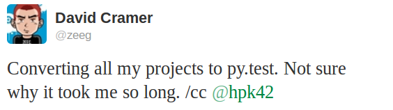
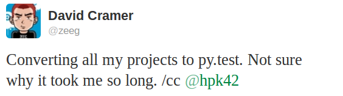

{kind=link}

Project examples¶
Here are some examples of projects using pytest (please send notes via Contact channels):
PyPy, Python with a JIT compiler, running over 21000 tests
the MoinMoin Wiki Engine
sentry, realtime app-maintenance and exception tracking
tox, virtualenv/Hudson integration tool
PyPM ActiveState’s package manager
Fom a fluid object mapper for FluidDB
applib cross-platform utilities
six Python 2 and 3 compatibility utilities
pediapress MediaWiki articles
mwlib mediawiki parser and utility library
The Translate Toolkit for localization and conversion
execnet rapid multi-Python deployment
pylib cross-platform path, IO, dynamic code library
bbfreeze create standalone executables from Python scripts
pdb++ a fancier version of PDB
pudb full-screen console debugger for python
py-s3fuse Amazon S3 FUSE based filesystem
waskr WSGI Stats Middleware
guachi global persistent configs for Python modules
Circuits lightweight Event Driven Framework
pygtk-helpers easy interaction with PyGTK
QuantumCore statusmessage and repoze openid plugin
pydataportability libraries for managing the open web
XIST extensible HTML/XML generator
tiddlyweb optionally headless, extensible RESTful datastore
fancycompleter for colorful tab-completion
Paludis tools for Gentoo Paludis package manager
Gerald schema comparison tool
abjad Python API for Formalized Score control
bu a microscopic build system
katcp Telescope communication protocol over Twisted
pyudev a pure Python binding to the Linux library libudev
pytest-localserver a plugin for pytest that provides an httpserver and smtpserver
pytest-monkeyplus a plugin that extends monkeypatch
These projects help integrate pytest into other Python frameworks:
pytest-django for Django
zope.pytest for Zope and Grok
pytest_gae for Google App Engine
There is some work underway for Kotti, a CMS built in Pyramid/Pylons
Some organisations using pytest¶
Some Mozilla QA people use pytest to distribute their Selenium tests
cellzome
many more … (please be so kind to send a note via Contact channels)